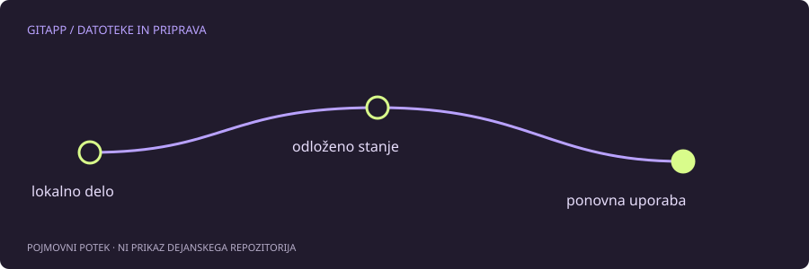

Začasna odložitev ima določen obseg
git stash pomaga začasno odložiti lokalno delo, vendar ni samodejna kopija vseh datotek projekta. Privzeti obseg ne vključuje vseh novih nesledenih ali prezrtih datotek. Če se zanašaš na napačno predstavo, lahko po preklopu na drugo nalogo opaziš, da del vsebine ni bil odložen.
Najprej razvrsti spremembe: sledene in nesledene datoteke, pripravljena ter nepripravljena vsebina, morebitne prezrte poti. Pri tem pomagata git status in pregled obeh vrst razlik.
Preveri pred odlaganjem
Začetni pregled je:
git status --short
git diff
git diff --cachedČe želiš vključiti tudi nesledene datoteke, obstaja možnost -u. To še ne pomeni vključitve prezrtih poti; za drugačen obseg obstajajo druge možnosti. Njihove posledice preveri v dokumentaciji, zlasti če projekt vsebuje veliko odvisnosti, ustvarjenih datotek ali lokalnih skrivnosti.
Jasno ime pomaga pri vrnitvi
V učnem primeru lahko namerno odložiš sledeno in nesledeno delo z opisom:
git stash push -u -m "Delo pred preklopom naloge"
git stash listPo ukazu ponovno preglej stanje. Ne domnevaj, da je odložitev uspela in zajela vse samo zato, ker ukaz ni izpisal očitne napake. Preveri tudi, kaj ostaja v delovni mapi.
Apply in pop nista ista odločitev
git stash apply poskusi uporabiti odloženo stanje in praviloma ohrani njegov zapis. git stash pop ga po uspešni uporabi tudi odstrani s seznama. Če nastane spor, so posledice drugačne kot pri povsem uspešnem poteku in je treba prebrati izpis.
Za previden pregled je pogosto bolj razumljivo uporabiti apply, preveriti rezultat in se o odstranitvi zapisa odločiti pozneje. To ni jamstvo, da spora ne bo: datoteke so se lahko medtem spremenile.
Ni trajna hramba projekta
Odložena stanja imajo lokalni značaj in jih ne smeš obravnavati kot edino varnostno kopijo. Tudi urejanje indeksa in njegova kasnejša rekonstrukcija imata dodatne možnosti ter omejitve. Če potrebuješ natančno ohranitev priprave, preberi dokumentacijo za ustrezen postopek.
Ko delo vrneš, preveri vsebino, stanje priprave in preizkuse. Ne odstranjuj več zapisov naenkrat samo zato, ker je seznam dolg. Najprej ugotovi, kateri zapis vsebuje kaj in ali si njegovo vsebino že varno ohranil.
Vir in obseg
Referenca: uradni priročnik za git-stash. Primeri so pripravljeni za učenje in niso opis posega v dejanski projekt. Preberi način preverjanja.